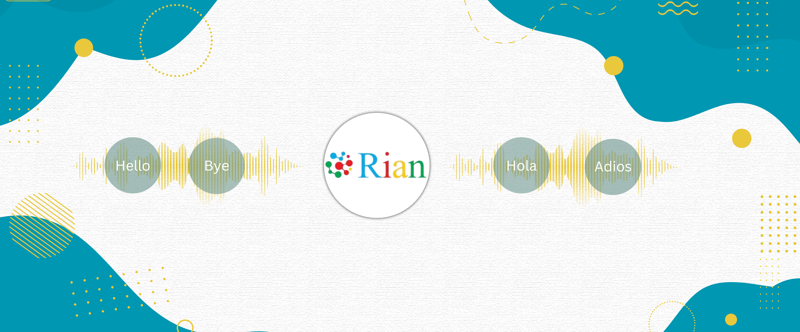

How Podcast Localization Can Skyrocket Your Listener Base
Podcasting is exploding, with millions of episodes across countless genres available to listeners worldwide. In the U.S. alone, 144 million people have listened to a podcast, and over 75% of the population is familiar with the term "podcasting." With stats like this, podcast creators must optimize their reach and widen their global opportunity through localization. The podcast industry is booming, with the market size expected to reach $1.5 billion by 2027. This growth is driven by increasing listener numbers and the proliferation of podcast platforms. For example, 34% of podcast users prefer Spotify, while Apple Podcasts and Google Podcasts hold significant shares with 28% and 17%, respectively.
Why Localize?
Enhanced Localization
AI-driven localization makes podcasts more accessible globally by capturing nuances and cultural contexts that traditional methods often miss. AI technologies like natural language processing (NLP) and machine learning enable more accurate translations, resonating better with target audiences. This approach reduces localization time by up to 70%, allowing for faster release of multilingual content.Efficient Voice-Over and Dubbing
AI is transforming the voice-over and dubbing process. AI-generated voice-overs adapt content to match desired languages and tones efficiently, significantly cutting the time and cost of traditional methods. For instance, AI can lower production costs by at least 35% and shorten the dubbing process from weeks to days, enabling podcasters to scale content to multiple languages effortlessly.Boosting Engagement
With 74% of audiences preferring content in their native language, localization allows you to reach a global audience by adapting podcast content to their linguistic needs. This opens the gate to new listeners, better engagement, and improved monetization opportunities. Transcription and translation services help reach non-native speakers by providing content in their preferred language.
AI Tools for Accessibility
AI tools such as speech-to-text and automatic subtitling enhance podcast accessibility. These tools generate accurate transcriptions and subtitles in multiple languages, ensuring content is accessible to deaf or hard-of-hearing audiences and non-native speakers. This inclusivity broadens the podcast’s reach and impact, making it more appealing to a diverse audience. For example, Rian's AI can transcribe and subtitle an hour-long podcast in a short period of time, a task that traditionally takes hours!Cost and Time Efficiency
AI significantly reduces the time and cost associated with podcast production and localization. Automated processes like translation, voice-over, and transcription streamline the workflow, allowing podcasters to produce high-quality content more efficiently. This efficiency is particularly beneficial for podcasters looking to scale their operations and reach new markets. AI can reduce production costs by at least 35% and cut down localization time by 70%.Conclusion
Localization is not just a trend; it's a necessity in today's globalized world. Localizing your podcast through Rian's AI opens doors to new audiences, enhances engagement, and stays ahead of the competition due to its numerous benefits. Take advantage of the opportunity to connect with millions of potential listeners worldwide through Rian and watch your podcast grow!Book a Demo to experience the magic firsthand.
Follow us on LinkedIn